In this chapter, you will revise the work you did on electrical systems and control in Grade 8. You will also revise simple circuits, circuit diagrams and connecting cells, and lamps and switches in series and parallel. You will then do action research on the effects of changing the voltage in a circuit.
1.1 Revision 1: Component symbols 2
1.2 Revision 2: Simple circuits 11
1.3 Testing voltage and current in circuits 13
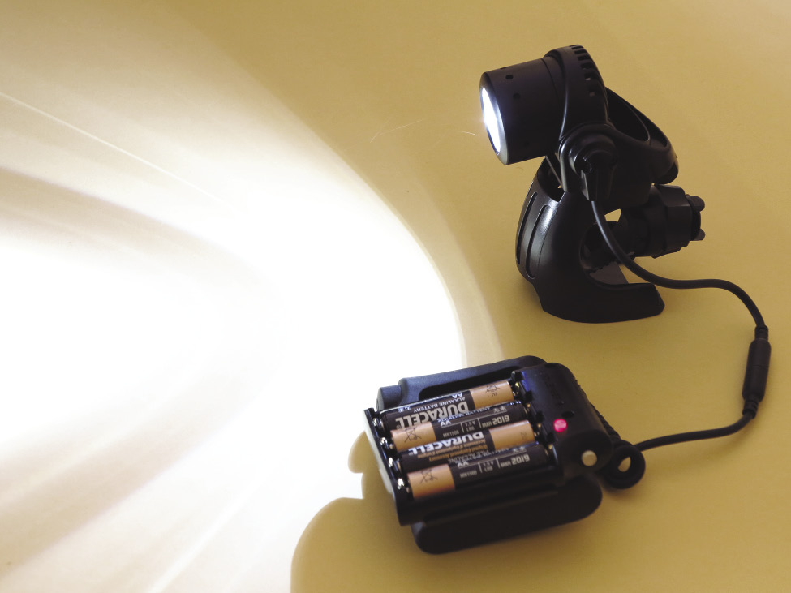
Figure 1: A torch
1.1 Revision 1: Component symbols
“Components” are the parts that we connect in an electric circuit.
Do you remember the symbols for cells, lamps and switches?
Do you remember the difference between joining components in series and in parallel? Let’s see what you can remember.
You have already learnt that an electric circuit is a closed path in which a current flows.
|
The simplest circuit has:
|
Cells in series
Two or more cells can be connected in series to increase the voltage in the circuit. Figure 2 below shows two cells connected in series in a circuit. The positive terminal of cell A is connected to the lamp.
The negative terminal of cell A is connected to the positive terminal of cell B, and the negative terminal of cell B is connected to the other terminal of the lamp.
In series means the cells are connected end-to-end, and the current flows through each cell in turn.
1. Draw a circuit diagram of the circuit in Figure 3 in the space to the right of it.
Figure 2: Two cells in series connected to a lamp
2. Figure 3 below shows three cells connected in series in a circuit. Draw a circuit diagram of the circuit in the space to the right of Figure 3.
|
|
Figure 3: Three cells in series connected to a lamp
|
When cells are connected in series, their total voltage is the sum of the voltages of the three cells: 1,5 V + 1,5 V + 1 ,5 V = 4,5 V |
Cells in parallel
Two or more cells can also be connected “in parallel”. A parallel circuit has two or more different paths for the current to travel along.
Figure 4 below shows two cells connected in parallel in a circuit. The positive terminals of both cells are connected to each other and to the lamp. The negative terminals of both cells are connected to each other and to the other terminal of the lamp.
3. Draw a circuit diagram of the circuit in Figure 4 in the space to the right of it.
|
|
Figure 4: Three cells in parallel connected to a lamp
|
When cells are connected in parallel, the total voltage of the cells is the same as that of a single cell (1,5 volts). |
Lamps in series
Two or more lamps can also be connected in series.
The pictures below show circuit diagrams of two and three lamps connected in series with the battery. The positive terminal of the battery (+B) is connected to lamp 1, the other side of lamp 1 is connected to lamp 2, the other side of lamp 2 is connected to the negative terminal (B–) of the battery, and so forth.
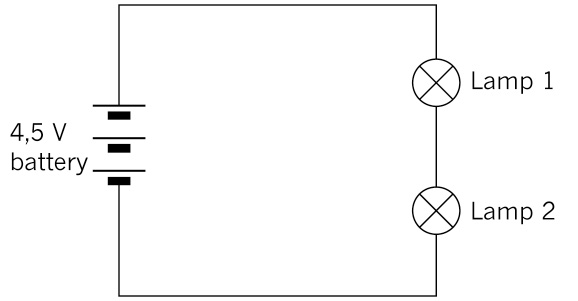
Figure 5: Two lamps in series
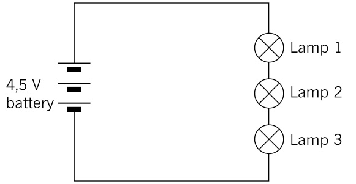
Figure 6: Three lamps in series
4. How does increasing the number of lamps in series change the current and voltage in the circuit?
The overall voltage drop of the lamps remains the same, but the current
decreases.
|
If all the lamps have the same resistance, the voltage drop across each lamp will be equal to 1,5 V. When the voltage drops of all the lamps are added, the total battery voltage of 4,5 V is obtained. The current is the same through each lamp. |
Lamps in parallel
Two or more lamps can also be connected to the battery in parallel, as shown in the pictures below. The positive terminal of the battery is directly connected to one side of each lamp and the negative terminal to the other side of each lamp.
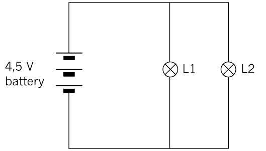Figure 7: Circuit diagram of two lamps in parallel
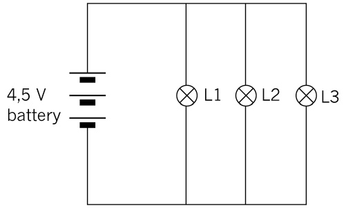
Figure 8: Circuit diagram of three lamps in parallel
|
The applied voltage is the same across each lamp. The current is divided across each lamp, and the total current is the sum of the current through each lamp: It = I1 + I2 + I3 |
5. Look at the circuit diagram below and answer the following questions:
Figure 9
(a) What is the voltage drop across lamps 1 and 2?
The voltage drop across each lamp is 4,5 V. (It will actually be slightly less
than that due to the internal resistance of the battery.)
(b) The total current in the circuit is 10 A. If lamp 1 has a current of 4 A flowing through it, what will the current be through lamp 2?
10 A – 4 A = 6 A
Switches in series and parallel
In a circuit with one switch, the switch controls whether the current flows through the circuit or not. If the switch is open, no current flows, as the circuit is not completed. The closed switch allows the current to flow.
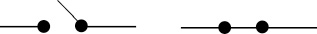
Figure 10: Symbols for an open switch and a closed switch
We can use two or more switches to control components in a circuit in more complex ways.
|
In a logic circuit, an open switch is regarded as having a value of 0, and a closed switch as having a value of 1. The switches are the inputs that control the final state of the circuit. If the circuit is not completed, the output is in the OFF state and has a value of 0. If the circuit is completed, the output is in the ON state and has a value of 1. |
Switches in series
In the circuit below, there are two switches in series. This gives us four different switch combinations. They are:
- • Switch A and B both open,
- • Switch A open and B closed,
- • Switch A closed and B open, and
- • both switches closed.
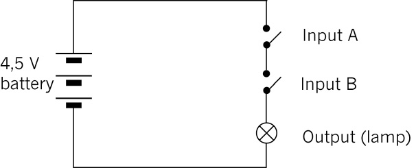
Figure 11: Circuit with two switches in series
Do you see that the current cannot flow through the circuit if either switch A or switch B is open? Both of them must be closed for the lamp to glow.
6. In the table below, “0” means off or open, and “1” means on or closed. Complete the table to show all the different combinations possible in the circuit in Figure 11. To help you, the first two rows of the table have already been completed. Make sure you understand those two rows before you complete the rest of the table
|
Input A |
Input B |
Output |
|
0 |
0 |
0 |
|
0 |
1 |
0 |
|
1 |
0 |
0 |
|
1 |
1 |
1 |
The table showing these combinations is called a truth table.
|
Both switch A and switch B must be closed for the circuit to be completed (an output of 1). So we can see that switches connected in series give us an AND function. |
Switches in parallel
In the circuit below, there are two switches in parallel. This also gives us four different switch combinations.
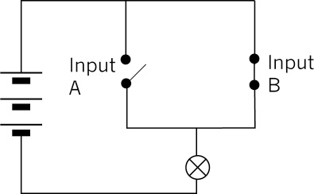
Figure 12: Circuit with two switches in parallel
Do you see that the current can go through the closed switch, even if the other switch is open?
7. Complete the truth table below for the circuit in Figure 12.
|
Input A |
Input B |
Output |
|
|
|
|
|
|
|
|
|
|
|
|
|
|
|
|
|
The truth table shows that when switch A or switch B is closed, the output will be 1 (the lamp will be on). We call switches in parallel an OR function. |
Questions for homework
1. Would the lamp light up in each of these circuits? Explain your answer.
(a)
Yes, because the lamp light is part of a
complete circuit that includes the
battery (there is a continuous conducting
loop including the lamp light and the
battery).
Figure 13
(b)
No, the lamp light is not part of a complete
circuit that includes the battery (the lamp
and bulb are in a loop that is open).
Figure 14
(c)
No, the lamp light is not part of
a complete circuit that includes the
battery (the lamp and bulb are in a
loop that is open). This circuit is
electrically equivalent to the one
in Figure 14.
Figure 15
2. A kettle must be switched on at the wall plug first and then at the kettle itself.
(a) Fill in the truth table to show all the possible combinations.
|
Wall plug switch |
Kettle switch |
Output |
|
0 |
0 |
0 |
|
0 |
1 |
0 |
|
1 |
0 |
0 |
|
1 |
1 |
0 |
(b) Is this an AND function or an OR function? Explain your answer.
It is an AND function. Both switches have to be closed for the kettle to
work. If one is off, the kettle will not work.

1.2 Revision 2: Simple circuits
In this lesson, you will set up simple circuits, revising what you learnt about setting up circuits in Grade 8.
You will need the following for this activity:
- • two AA cells in cell holders,
- • connecting wires,
- • a switch, and
- • two lamps.
Note that you can use a homemade switch and a cell holder made of insulation tape for this activity.
1. Look at the circuit below.
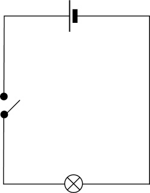
Figure 16
Set up this circuit and check that it works by closing the switch.
(a) Does the lamp light up?
Yes, it lights up.
When you have the circuit working correctly, move on to question 2. If you need to, you can troubleshoot your circuit by looking at the following:
- • If the lamp doesn’t light up, but the wires get hot, you may have a short circuit. This means that the lamp is not connected correctly in the circuit, or that it is faulty. Check that the lamp is connected correctly in the circuit.
- • If the lamp still doesn’t light up, check each component and connecting wire by replacing them, one by one. You can identify which one is faulty this way.
2. Add another lamp to the circuit in series with the first one.
(a) Draw a circuit diagram for this circuit.
|
|
Note the third example of a correct circuit diagram. It looks like the lamps
are in parallel, but electrically they are in series. It is important that
learners do not confuse what a circuit looks like with how it works
electrically. It would be a good idea to draw the third example on the board,
and ask the learners if the lamps are in series or in parallel.
(b) What do you notice about the brightness of the lamps?
Both bulbs are dimmer than the one that was originally on its own.
3. Set up the same circuit, but add another bulb in series with the first bulb.
(a) Draw a circuit diagram for this new circuit.
|
|
(b) Write what you notice about the lamps in this circuit.
All three lamps are dimmer than the two lamps were in the previous circuit.
4. Write down your conclusions about changing the number of cells and the number of lamps in the circuit.
Adding an extra lamp in series. to a circuit that already has one or more
lamps connected in series, results in all the lamps being dimmer than before.
1.3 Testing voltage and current in circuits
In this lesson, you will investigate the relationship between the value of the voltage and the current in a circuit. You will need to use a multi-meter that can be set to measure the voltage, resistance or the current in a circuit.
V: volts (potential)
A: amps (current)
Ω: ohms (resistance)
Begin by reading the text below on how to use a multi-meter correctly.
Measuring resistance
Identify the section labelled “Ω” on the multi-meter in the picture below.
- • Connect the red test lead to the “V ΩmA” terminal, and the black test lead to the “COM” terminal.
- • Adjust the function selector switch to “Ω”.
- • Connect the ends of the test leads across the unknown resistor as shown. Ensure that the resistor is isolated from any other component or power supply.
- • Read the value of the resistor from the display, and if necessary adjust the dial to ohm, Ω, to obtain a good reading. Do this in whole numbers rather than in decimals.
Figure 17: Multi-meter set and connected to measure resistance
Measuring voltage
Identify the section labelled “DCV” on the multi-meter in the picture below.
- • Connect the red test lead to the “VΩ mA” terminal, and the black test lead to the “COM” terminal.
- • Adjust the range selector to the “DCV”.
- • Set the meter on the highest range.
- • Connect the other ends of the test leads parallel across the part of the circuit where the voltage is to be measured: red test lead to positive (+), and black test lead to negative (–).
- • Read the voltage from the display. You may need to adjust the voltage selector until a good reading is displayed. Do this in whole numbers rather than in decimals.
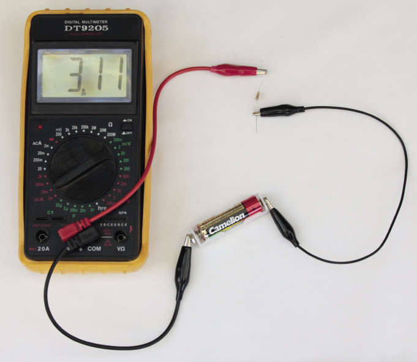
Figure 18: Multi-meter set and connected to measure current
Measuring current
Identify the section, labelled “DCA” on the multi-meter in Figure 18.
- • Connect the red test lead to the “V mA” terminal and the black test lead to the “COM” terminal. If the current to be measured is between 200 mA and 10 A, connect the red test lead to the “10 A” terminal.
- • Adjust the range selector to the “A” (ampere) region. If you are measuring an unknown current, start from the highest range, then adjust to a proper lower range for the best accuracy.
- • Connect the other ends of the test leads in series with the part of the circuit where the current is to be measured. (Disconnect the circuit and place the meter in series.)
- • Read the current value from the display.
Action research
You will need the following for this activity:
- • three penlight cells (AA) in holders,
- • a 500 ohm resistor, with the colour bands exactly as in Figure 19, and
- • two multi-meters, or an ammeter and a voltmeter.
Set up the circuit as shown in Figure 20 below, using a cell, resistor and ammeter. If you use a multi-meter instead of an ammeter, set it on the amps scale.
In the next chapter, you will learn how the colour bands on a resistor tell you the resistance (ohms).
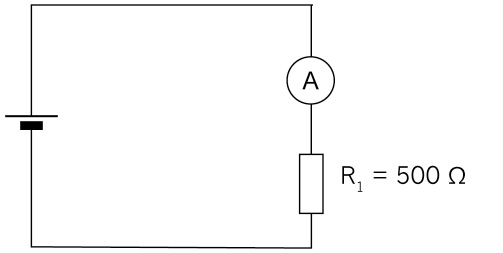
Figure 20: Circuit with one cell, resistor and ammeter
Now connect a voltmeter across the resistor, as shown in Figure 21. If you use a multi-meter instead of a voltmeter, set it on the volts scale.
An ammeter is always connected in series with the part of the circuit for which you measure the current, so that it measures the full current through that part of the circuit. It has a very small resistance so that it does not change the current in the circuit.
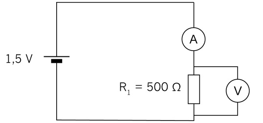
Figure 21: Circuit with one cell, resistor, ammeter and voltmeter across resistor
A voltmeter is always connected in parallel with the part of the circuit for which it measures the potential difference between two points. Very little current flows through a voltmeter since it has a very high resistance.
1. Record the reading:
V = 1,5 V or slightly less
I = 3,0 mA (milliamps) or slightly less
Now connect a second cell in series as shown in the circuit diagram below:
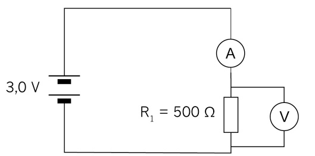
Figure 22: Circuit with two cells in series, resistor, ammeter and voltmeter across resistor
2. Record the reading:
V = 3,0 V or slightly less
I = 6,0 mA (milliamps) or slightly less
Now connect a third cell in series as shown in Figure 23.
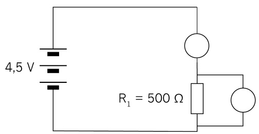
Figure 23
3. Record the reading:
V = 4,5 V or slightly less
I = 9,0 mA (milliamps) or slightly less
4. Fill in your readings on the table below:
|
|
With one cell |
With two cells |
With three cells |
|
Voltage |
1,5 V |
3,0 V |
4,5 V |
|
Current |
3,0 mA |
6,0 mA |
9,0 mA |
5. Plot the readings on the graph paper below.
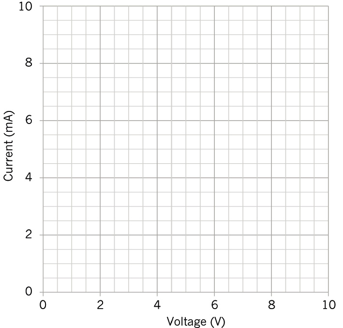
Figure 24: Graph of the relationship between potential difference and current
6. Describe the relationship between voltage and current for a
500 W resistor.
The co-ordinates lie in a straight line. The origin is on this line.
- • Did you notice that as the voltage is increased the current increases?
- • Is your graph in a straight line?
|
There is a directly proportional relationship between voltage and current. As the voltage is doubled, the current will double; and as the voltage is tripled the current will triple. |

Next week
Next week, you will look at different kinds of resistors used in circuits. You will also practise doing calculations using the formulas in Ohm’s Law.
In this chapter, you will learn how to use resistors in electric circuits to control a current. You will discover that there are different kinds of resistors for different purposes, and you will learn how to read the amount of resistance on a resistor. You will also learn about Ohm’s Law, which relates the quantities of voltage, current and resistance, and you will use formulae to do calculations to find the values of voltage, current and resistance.
2.1 Resistors and their identification codes 21
2.2 Ohm’s Law 24
2.3 Calculations using Ohm’s Law 26
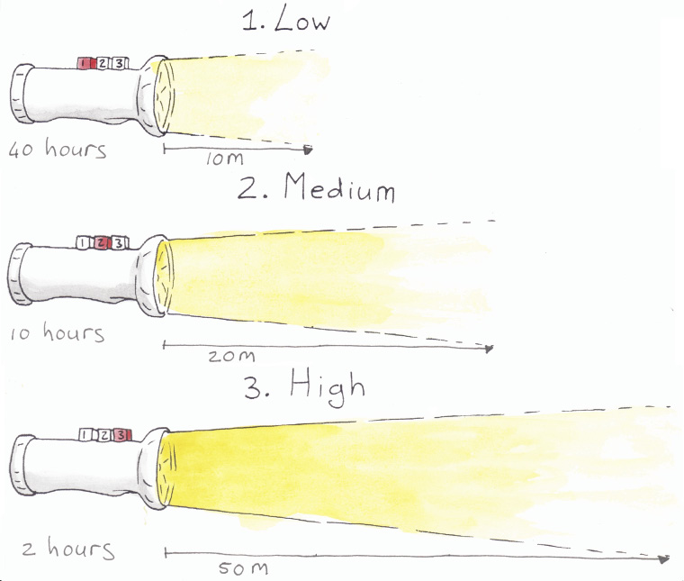
Figure 1: You can change the brightness of the light on some torches. The brighter the light you choose, the faster the battery will run out.
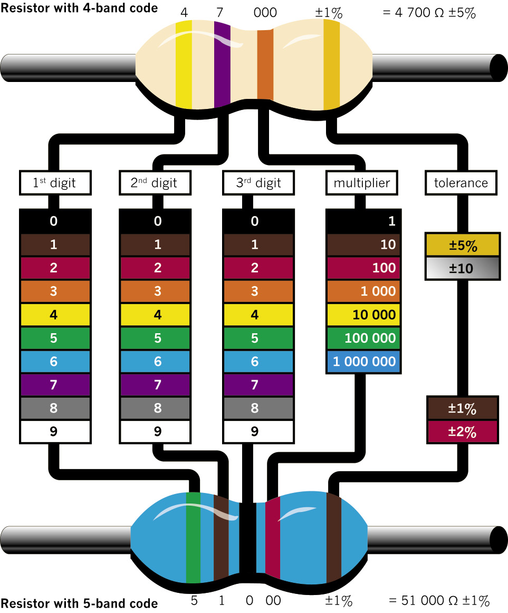
Figure 2: How to read the colour bands on a resistor to find out what its resistance is. (You will only work with resistors with four-colour bands, such as the one at the top.)
2.1 Resistors and their identification codes
What is resistance?
Electricity flows far more easily through copper wire than through plastic wire, string or grass. Copper wire has a low resistance to electricity flow, whereas plastic wire has a high resistance. Because electricity flows easily through copper wire, copper is a good conductor of electricity.
To resist something means to try to prevent it. If you sit in a tree and the wind blows hard, you can resist falling down by clinging to the branches.
To conduct means to allow something to pass through.
The resistance that an object, for example a piece of wire, offers to the flow of electricity can be measured.
|
Resistance is measured in ohms. We use the |
When electricity flows through a conductor, heat is generated. Some metals, such as nickel and chrome, resist the flow of electricity quite strongly, and heat up when electricity is forced to flow through it. The heating elements of stoves and kettles are normally made of a mixture of nickel and chrome. When some metals get extremely hot, they emit light.
When something emits light, it is a source of light. A light bulb is a source of light, but a mirror is not a source of light as it only reflects light.
If the resistance in a circuit is very low, for example when the terminals of a cell are connected with a piece of thick copper wire, the current will flow very strongly. This is called a “short circuit”. It can result in so much heat being generated that damage is caused to the cell and other parts of the circuit, the conducting wires can melt and a fire can start.
By adding more resistance to a circuit, you can control how great the current is that flows through the circuit. In this way, you can protect the components in a circuit from too much current flowing through them. Increasing the resistance also means the cell or battery powering the circuit will last longer. You can add precise amounts of resistance by using resistors with the required resistance value.

What is a resistor?
A resistor is a specially designed component that is normally used in a circuit to limit the current. Resistors are made of materials with a high resistance to electricity flow, and come in the form of thin wires or films. Resistors also have precise resistance values that don’t change much in different environmental conditions.
The most commonly used resistors look like tubes, with two wires to connect it to the circuit. The symbol to show a resistor in a circuit diagram is an open rectangle or a zigzag line.
Figure 3: A typical resistor Figure 4: Circuit symbols for resistors
Low-value resistors often have their resistance value printed on them in numbers, while high-value resistors are coded, using coloured bands. The first three bands give the value of the resistor in ohms. The colour-code chart on the second page of this chapter will help you to work out the resistance value in ohms.
The fourth band on a resistor shows the accuracy rating as a percentage. This is also called the “tolerance”. The band is gold or silver, depending on the tolerance. For the circuits you will be building, this is not important.
Resistors are the most commonly used components in electronics, as they are useful to control current. You will see how they are used in the following weeks.
Units of measurement: ohms, kilo-ohms and mega-ohms
|
|
Kilo means multiply by a thousand, for example
1 km = 1 000 × 1 m.
Mega means multiply by a million.
1. Work out and write down the resistance of each of these resistors:
(a) (b)
Figure 5 Figure 6
700 Ω 1 700 kΩ
(c) (d)
Figure 7 Figure 8
7,5 kΩ 4 300 MΩ
2. Fill in the colour codes on these blank resistors to show the given resistance, or write the colour of each band above it if you don’t have coloured pencils or pens.
(a) 200 kΩ (b) 300 Ω
black, red, green black, orange, red
Figure 9 Figure 10
3. Describe the function of a resistor as a component in an electrical circuit.
It reduces the current through the circuit, and reduces the voltage drop across
other circuit components that are in series with the resistor.

2.2 Ohm’s Law
There is a special relationship between the voltage, current, and resistance in any circuit. You can control any one of these three variables by changing the other two variables.
Ohm’s Law states that as voltage increases, the current increases if the resistance is constant.
A variable is a quantity that can have different values, for example the amount of water in a tank. A constant is a quantity that always has the same value, for example gravitational acceleration. Sometimes we call a quantity a constant because we decide to keep it constant.
|
In the formula for Ohm’s Law:
|
Figure 11 shows this relationship in a formula triangle.
When the voltage and current are known, the resistance can be calculated with:
R =
V
I
.
When the resistance and current are known, the voltage can be calculated with:
Figure 11
V = I × R.
When the resistance and voltage are known, the current can be calculated with:
I =
V
R
.
Questions
Consider the following circuit:
Figure 12
1. What does Ohm’s Law say will change in a circuit when the resistance is kept constant but the number of cells in series is increased?
The current will increase in direct proportion to the number of cells.
2. How will the current change if the voltage supplied by the battery of cells is kept constant but the resistor is replaced by another resistor with a lower resistance?
The current will increase.
3. How would you describe the relationship between the current and the voltage in a circuit?
They are in direct proportion to each other: when one changes by a factor the
other one changes by the same factor (for example, if one is increased to five
and a half times its value the other will also increase five and a half times. If
one is made a third of its value, other will decrease to a third of its
previous value).
4. How would you describe the relationship between the current and the resistance in a circuit?
There is no relationship. Resistance is a characteristic of a resistor that is
unaffected by the voltage connected across it or the current flowing through it.
5. Which of these changes will cause the current through an electrical circuit to decrease? Write down all the letters of the statements that are correct.
(a) a decrease in the voltage
(b) a decrease in the resistance
(c) an increase in the voltage
(d) an increase in the resistance
(a) and (d)
6. An electrical circuit has three 1,5 V cells in series that is connected to a lamp and a resistor in series. Which of the following things would cause the lamp to shine less brightly? Write down all the letters of the statements that are correct.
(a) an increase in the voltage of the battery (add another cell)
(b) a decrease in the voltage of the battery (remove a cell)
(c) a decrease in the resistance of the resistor
(d) an increase in the resistance of the resistor
(b) and (d)
 2.3 Calculations using Ohm’s Law
2.3 Calculations using Ohm’s Law
Last week, you learnt how Ohm’s Law can be used to predict what will happen when you change one or two of the following variables: current, voltage or resistance. You will now use the formulas of Ohm’s Law to make predictions. Remember to use the correct units in the formula!
Example 1
Calculate the value of the resistance in the diagram below if the voltage across the resistor is 12 V and the current through the resistor is 2 A.
R =
V
I
=
12 V
2 A
= 6 Ω
Figure 13
Example 2
Calculate the value of the voltage supply in the circuit below if the resistor has a value of 4 Ω and the current through the resistor is 2,5 A.
V = I × R
= 2,5 A × 4 Ω
= 10 V
Figure 14
Example 3
Calculate the value of the current in the circuit below if the resistor has a value of 3 Ω and the voltage across the resistor is 12 V.
I =
V
R
=
12 V
3 Ω
= 4 A
Figure 15
Questions
1. What will the potential difference be if the current in a circuit is 10 A and the total resistance is 1 000 Ω?
V = I × R, so V = (10 A) × (1000 Ω) = 10 000 V
2. Given V = 10 V and R = 1 kΩ, what will the value of the current be in a circuit?
V = I × R, so I = V ÷ R = (10 V) ÷ (1 000 Ω) = 0,010 A
3. Given V = 20 V and R = 5 kΩ, solve for the current.
V = I × R, so I = V ÷ R = (20 V) ÷ (5 000 Ω) = 0,004 A
4. A tumble dryer in a laundry service uses a 220 V power source. The coils of the heater provide an average resistance of 12 Ω. What is the current flowing through the heating coils?
V = I × R, so I = V ÷ R = (220 V) ÷ (12 Ω) = 18,3 A
5. A 9 V battery maintains a current of 3 A through a radio. What is the resistance in the circuit?
V = I × R, so R = V ÷ I = (9 V) ÷ (3 A) = 3 Ω
6. If the voltage across a circuit is increased four times, what would you expect to happen to the current through the circuit?
It will increase four times as well.
7. (a) In the circuit below, calculate the value of the resistor.
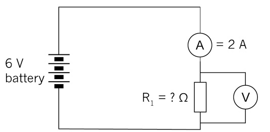 Figure 16
V = I × R, so R = V ÷ I = (6 V) ÷ (2 A) = 3 Ω
(b) If two more cells are added to the circuit, will the current increase or decrease? Check your prediction using the formula.
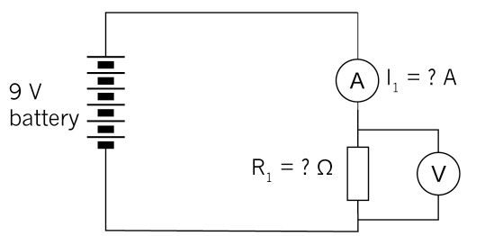Figure 17
Increase by two cells means 2 × 1,5 V = 3 V extra
V = I × R, so I = V ÷ R = (9 V) ÷ (3 Ω) = 3 A which is bigger than 2 A
8. Calculate the battery voltage for the circuit below:
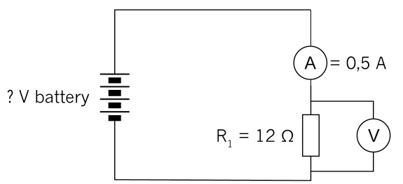
Figure 18
V = I × R, so V = (0,5 A) × (12 Ω) = 6 V
9. Look at the circuit below:
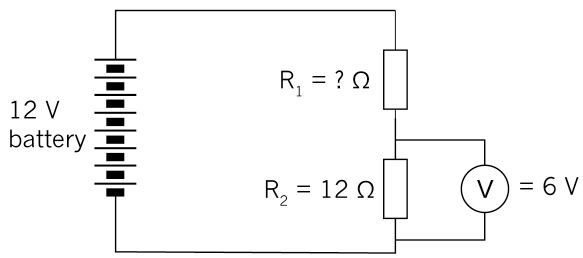
Figure 19
(a) Calculate the current through R2.
V = I × R, so I = V ÷ R = (6 V ) ÷ (12 Ω) = 0,5 A
(b) What will the current be through R1?
0,5 A. The series is in circuit so the current through any point is the same.
(c) What will the voltage across R1 be?
V = 12 V – 6 V = 6 V
(d) What will the resistance value of R1 be?
12 Ω. It has the same voltage as R.

Next week
In the next chapter, you will learn about components commonly used in electronic systems and their special functions.
In this chapter, you will learn about electronic systems and about components in electronic circuits. You will also learn about the following control devices: switches, diodes and transistors. Finally, you will make a simple transistor circuit. An electric circuit consists of an energy source and conductors. Conductors connect components such as input, output and process devices to create a path for the electrons to flow to and from the source of energy. Insulators are used to keep the components from short-circuiting.
3.1 Switches 32
3.2 Diodes 38
3.3 Transistors 41
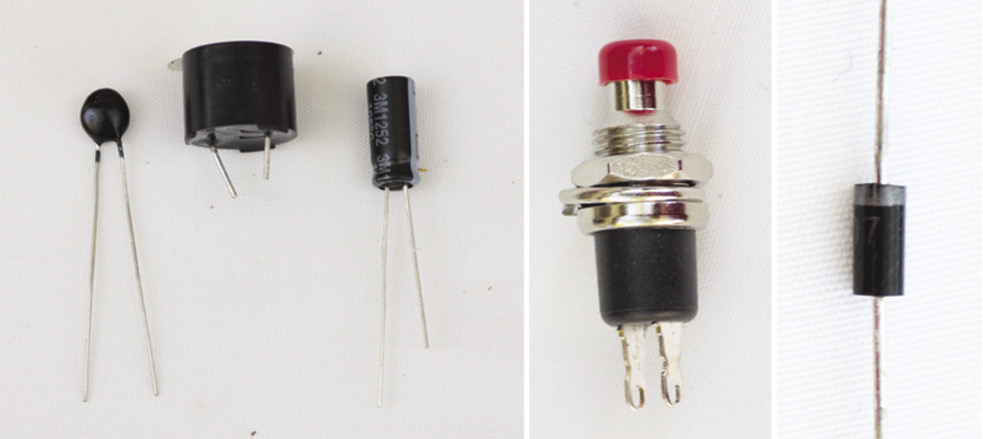
Figure 1: A few examples of electronic components that we will deal with in this chapter
3.1 Switches
A switch controls the electric current by closing or opening the circuit. There are various types of switches that control the circuit in different ways. In this lesson, you will learn about manual switches that a user can turn on or off.
1. Think about different switches that you use daily and list them here:
light switches
plug switches
switches on appliances such as kettles, toasters, lamps and ovens
switches on electronic devices such as remote controls and cell phones
Push button switch
Push button switches are often used for doorbell circuits, as in Figure 2. This simple doorbell circuit consists of cells in series, a push button and a buzzer, all connected by conducting wire. A person visiting the house presses the button for a short time and then releases it.
Figure 2: A simple doorbell circuit
2. Draw the circuit diagram of the doorbell circuit in the photograph. Use the correct circuit diagram symbols. Note that the cells are in series.
|
|
3. Explain in your own words how this circuit works.
When the push button is pressed in, the circuit is completed and the buzzer
makes a sound. The buzzer makes a sound for as long as the push button is
pressed in.
Single-pole, single-throw switch (SPST)
Switches are named using the words “pole” and “throw”. Pole refers to the number of circuits the switch controls, and throw refers to how many contacts the switch can make.
Single-pole, single-throw switches (SPST) control one input circuit and make one contact with the output circuit.
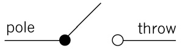
Figure 3: The symbol for an SPST switch
An example of an SPST is a light switch. Below is a typical lighting circuit.
When the switch is closed, the current will flow from the positive terminal (+) of the battery through the switch, through the lamp and back to the negative (–) terminal of the battery.
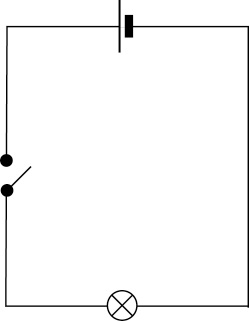
Figure 4: A typical light circuit with an
energy source, switch and lamp
Single-pole, double-throw switches (SPDT)
Single-pole, double-throw switches control one circuit, but they make two contacts so that they can control two devices. They turn on device 1 in one position and device 2 in the other position. There is no “off” position for this switch.
Figure 5: The symbol for an SPDT switch
An example of an SPDT is a switch that turns on a red lamp in one position and a green lamp in the other position.
The circuit diagram below shows a two-way lighting circuit.
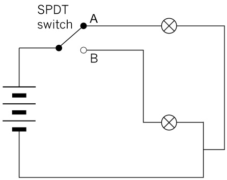
Figure 6: A circuit with a battery, two lamps and an SPDT switch controlling two outputs
4. Explain in your own words how this circuit works.
The explanation must mention that at any given time one of the lamps is on and
the other is off.
5. Think about how you can use an SPDT switch. You can make up an example, as long as it makes sense.
A few examples could be:
green and red lights to show whether a door is open or closed,
a heat-sensitive switch to show if a plate on a stove is hot or cold,
lights to show if the water level in a tank is low or high (switch connected to a
floating lever device),
to show if a train is arriving at a level crossing or not, and
a TV that shows a green light when it’s on, a red light when it’s off but it is
supplied with electrical energy, and no light when it’s not being supplied with
electrical energy (for instance if the plug is pulled out, or the wall switch is
off, or there’s a power failure).
6. Look at Figure 6 again. An SPDT switch controls two possible outputs. They cannot both be ON, nor can they both be OFF. Is this an example of OR logic or AND logic? Explain your answer.
It is an example of OR logic since one throw is always 1 while the other is 0.
In other words, only the 1-0 and 0-1 inputs are possible with an SPDT switch.
It’s impossible to give a 0-0 or a 1-1 input.
As long as the circuit is supplied with electrical energy, it’s impossible to get a 0
output.
7. Look at the circuit diagram below. It shows how one light can be controlled by two different switches.
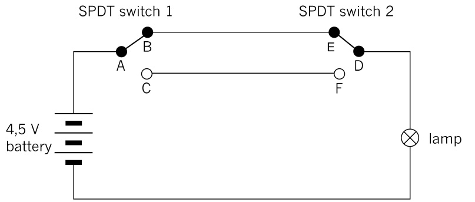
Figure 7: A circuit with two SPDT switches is often used to control a lamp with one switch at each end of a long passage. It is also used to control a lamp with one switch at the bottom of a staircase, and the other switch at the top of the staircase.
(a) Will the lamp turn on if A connects to C and D connects to F?
yes
(b) Will the lamp turn on if A connects to C and D connects to E?
no
(c) Will the lamp turn on if AB and ED are closed?
yes
(d) Will the lamp turn on if DF and AB are closed?
no
(e) Explain why the type of circuit in Figure 7 is useful for controlling the lamp in a long passage.
If you want to walk down a long passage at night, you want to switch the lamp
on when you enter the passage on the one side, and switch it off when you
exit the passage on the other side. If you could not switch off the lamp on
the other side, the lamp would remain on, and you would be wasting electrical
energy.
Double-pole, double-throw switches (DPDT)
A double-pole, double-throw switch (DPDT) is like two SPDT switches with their switch levers attached to each other. There are two input circuits, and for each input circuit, there are two possible output circuits.
In the symbol below, the dotted line shows that the switches operate together.
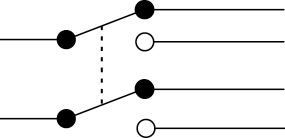
Figure 8
Consider an automatic car gate powered by an electric motor. To open the gate, the motor should turn in one direction. To close the gate, the motor should turn in the opposite direction. How can the direction in which the motor turns be changed? The way to do this is to change the direction of the current through the electric motor. Double-pole, double-throw switches can be used to reverse the direction of current through a circuit, so they are useful in applications such as automatic car gates. The circuit diagram below shows how a DPDT switch can change the direction of current through an electric motor.
Figure 9: A circuit where a DPDT switch controls the direction in which an electric motor turns
The motor shaft will rotate in one direction when the current passes through it from terminal M1 to M2, but the motor shaft will rotate in the opposite direction when the current passes through it from terminal M2 to M1.
When the ON/OFF switch is switched ON, with the DPDT switch in the position indicated in the diagram above, the current will flow from the positive of the battery, through the ON/OFF switch to 1, to 3, through the motor from M1, to M2, to 4, to 2 and back to the negative of the battery.
When the DPDT switch is moved to the other position than in Figure 9, the current will flow through the circuit in the following order:
- • from the positive terminal of the battery,
- • through the ON/OFF switch to 1,
- • through the top part of the DPDT switch from 1 to 5,
- • through the motor from M2 to M1,
- • to 6,
- • through the bottom part of the DPDT switch from 6 to 2, and
- • to the negative terminal of the battery.
8. Explain in your own words how this circuit works.
Learners’ own formulation. The answer must mention that both terminals of
the motor are connected to the two poles of the battery at any time when the
switch is in one of its two positions, and that flipping the switch only changes
which terminals are connected to which poles.
9. Explain the difference between an SPDT and a DPDT switch.
An SPDT switch allows you to choose through which of two parallel parts of a
circuit the current will flow (and through which part not). An SPDT switch does
not allow you to reverse the direction of current through a part of a circuit.
A DPDT will always let current through to the same part of a circuit, but it will
change the direction of the current in this part of the circuit depending on
which position the switch is in.
3.2 Diodes
A diode is a component with two terminals that can be connected in a circuit. The function of a diode in a circuit is to allow an electric current to flow in the forward direction and to block current in the opposite direction.
If the anode is connected to a higher voltage than the cathode, the current will flow from the anode to the cathode. This is called “forward bias”.
If the diode is put in the circuit back to front, so that the voltage at the cathode is higher than the voltage at the anode, the diode will not conduct electricity. This is called “reverse bias”.
Diodes are normally used to prevent damage to other components in circuits. For example, some components have positive and negative terminals and will be damaged if a current goes through them in the wrong direction. A diode can protect against a current flowing the wrong way if a battery was put in incorrectly to power the components. If you put batteries into a radio incorrectly, a diode will prevent damage to the radio.
Figure 10: A diode
Diodes vary considerably in size, current-carrying capacity, and reverse blocking voltage. They range from small diodes that can only handle 20 mA with a reverse blockage of 30 V, to large industrial diodes that can carry hundreds of amps and block up to thousands of volts. You can use a multimeter or a simple tester (battery, resistor and LED) to check in which direction a diode conducts.
Figure 11: Circuit symbol of a diode. The current flow in a diode is in the direction of the arrow head.
Light-emitting diodes (LED)
A light-emitting diode (LED) is a special kind of diode that glows when electricity passes through it. LEDs produce light of specific colours, based on the materials they are made from. For example, they can produce red, amber, yellow, green, blue, violet and white. The most common colour is red.
LEDs are often used to show if a circuit is working. Think about the small red light glowing on the front of a TV set that can sometimes change from red to amber.
LEDs are used as indicators in many devices, including calculator screens and digital clocks.
The LED will only allow current to pass in one direction. The cathode is normally indicated by a flat side on the casing and the anode is normally indicated by a slightly longer leg. The current required to power an LED is usually around 20 mA.
Figure 12: An LED. The longer of the two wires coming out of the LED should be connected to the positive terminal, and the shorter wire to the negative terminal.
The arrow symbol for an LED tells you in which direction the current flows.
Nowadays, LEDs are used in many cases where normal light bulbs were used. For example, household lighting is being replaced by LEDs. They are replacing light bulbs because they are more efficient and use much less electric energy. They also last for a long time.
Figure 13: The circuit symbol for an LED.
To protect an LED from too much current, a resistor has to be added to the circuit, as in the diagram below.
Figure 14: LED circuit with a current-limiting resistor.
Questions
1. Describe the function of a diode in your own words.
A diode allows current to flow in one direction, but not in the opposite direction.
2. List at least four places where LEDs are used. Don’t use the examples already given.
A few examples:
a cell phone light
LED computer and TV screens (only on more modern screens)
to show if an appliance (for example a printer or air conditioner) is active or
on standby
to show if a multi-plug adapter is switched on at the wall socket
modern torches
modern traffic lights (robots)
“daytime running lights” on some new cars
3. How can you make sure that a diode is put in a circuit in the right direction?
The longer of the two wires coming out of the LED should be connected to the
positive terminal of the electricity source, and the other wire to the negative
terminal.
You can also use a multimeter or ammeter to check in which direction a diode
conducts.
4. Draw the circuit symbols for a diode and for an LED here:
|
|
 3.3 Transistors
3.3 Transistors
Transistors are very important building blocks of modern electronic devices. They enable us to design smaller and cheaper electronic devices.
A transistor is a semiconductor device that consists of three layers. Each layer has its own connection point with a specific name: collector, base and emitter.
Figure 15: One type of transistor
Figure 16: The circuit symbol for an npn transistor
A transistor works as a type of switch to turn current on and off. It can also amplify a current.
An npn transistor acts as if there is a switch between the collector and the emitter. With a positive potential on the base of the transistor, the switch is closed. So it is an electrically controlled switch.
There are other types of transistors, for example pnp transistors that work a bit differently from npn transistors. But you will only work with npn transistors in this term.
Transistor is short for “trans-resistor” and this explains how it works. With a relatively small base current, the resistance between the collector and the emitter is changed. As the base current increases, the collector emitter resistance decreases.
In Chapter 5, you will learn about the applications of transistors.
A transistor circuit
Suppose you want to make a switch that is ON or closed when you touch its two terminals with your finger, and OFF or open when you don’t touch it. Look at the circuit diagram in Figure 17 for a touch-switch such as the one described. The purpose of this circuit is to light up the LED when you touch the touch-switch with your finger.
Figure 17: A simple touch-switch circuit that will not work well
Unfortunately, this circuit won’t work well, since your finger is a very weak conductor. In other words it has a very high resistance. So the current will be very small when you touch the switch. Therefore the LED will only emit a dim light.
By using a transistor, you can build a circuit that uses the very small current from your finger to switch on a larger current that passes through the LED, which will then emit a bright light.
Figure 18 shows a circuit that uses a transistor for this purpose. In this circuit, the touch switch is an “input device,” the npn transistor is a “control device,” and the LED is the “output device”.
A transistor uses a small current circuit to switch on a larger current circuit. This is why transistors are also used in music equipment to “amplify” the sound.
Figure 18: Circuit using a transistor as an electronic switch
1. The photograph below shows a circuit built according to the circuit diagram in Figure 18. Look at the photograph and identify each component in the circuit. Write labels for the different components and draw arrows pointing from the labels to the components.
Figure 19: The construction of a touch-switch circuit with a transistor and an LED.
2. Explain how the different parts of the transistor are connected in this circuit.
The collector is connected to the LED, the emitter is connected to the resistor,
and the base is connected to the blue wire at the right.
3. Explain what you expect to see when the touch switch is activated.
The LED will light up (assuming its terminals are connected correctly to the
battery and that the finger has sufficient moisture to complete the loop with
the base and emitter in it).
4. Touch the two terminals of the touch switch with one finger. Describe what happens.
The LED lights up.

Next week
Next week, you will learn more about electronic systems and components in electronic circuits. You will also learn about various kinds of input devices: sensors and capacitors.
In this chapter, you will learn more about electronic systems and components in electronic circuits. You will also learn about various kinds of input devices: sensors and capacitors. A touch switch is a sensor that works with the moisture on your skin. This is a very sensitive device that produces a small current. A transistor is required to make the current big enough to have an effect. This week, you will learn about other kinds of sensors and how they are used in devices.
4.1 Light-dependent resistors (LDR) 47
4.2 Thermistors (temperature-sensitive resistors) 50
4.3 Capacitors 53
Figure 1: Components connected on a printed circuit board
Figure 2: Measuring the resistance of a thermistor at room temperature.
Figure 3: Measuring the resistance of a thermistor while heating it with a hot object. You can heat a metal thumb tack by pressing it into an eraser, and then rubbing it hard against a piece of wood or plastic for one minute.
Safety warning: The thumb tack can get very hot and burn your skin, which can cause a wound.
4.1 Light-dependent resistors (LDR)
A light-dependent resistor, also called an LDR, is a resistor of which the resistance decreases when it is exposed to light of a higher intensity. It can therefore be used to detect light and trigger warning devices in cases where light may cause problems.
- • When an LDR is in the dark, its resistance value will be very high, around 1 MΩ.
- • When an LDR is exposed to a light of high intensity, the resistance value will decrease. It could drop from 1 MΩ to 2 kΩ.
An LDR has two terminals that can be connected to a circuit in either direction.
|
|
|
|
Figure 4: A light-dependent resistor
|
Figure 5: The circuit symbol for a light-dependent resistor |
Circuit of a day/night switch
Day/night switches are often used to turn on street and outside lights once it gets dark. It has an advantage above time switches, since the time settings can go wrong, and the amount of daylight does not remain constant during different weather conditions.
In this example, a light-dependent resistor (LDR) is the input device, an npn transistor is the control device, and an LED is the output device.
Figure 6: Circuit diagram of a day/night switch
1. Write four examples of when it would be useful to have a device that detects the amount of light, and does something in response to it.
A few examples:
Safety lights that switch on when the ambient light intensity drops below a
certain level.
Detect if something has moved past a point where a beam of light is shone on
a circuit with an LDR
Car lights that automatically switch on when it get darks, and switch off when
it is light.
An alarm clock that wakes you up when the ambient light becomes higher than
a certain intensity.
2. What is the role of the LDR in the circuit?
It causes the positive potential at the base of the transistor to increase as
its own resistance increases, relative to the resistance R3 (in parallel with R3).
This closes the circuit between the collector and emitter of the transistor and
the LED lights up as its terminals are now in electrical contact with the poles of
the battery.
3. Describe how the transistor is connected to the circuit.
The LED is in the loop containing the collector and emitter. The loop containing
the base is connected in parallel with the LDR so that when the resistance of
the LDR increases (when ambient light intensity decreases) a current will flow in
the loop parallel to the LDR.
4. What is the role of the transistor in this circuit?
It switches the LED on or off depending on the positive potential at the base.
4.2 Thermistors (temperature-sensitive resistors)
The resistance value of this resistor depends on the temperature it is exposed to.
There are two types of thermistors:
- • A “negative-temperature coefficient” type thermistor, where the resistance value decreases with an increase in temperature.
This is also called an “NTC” or “–T” thermistor. - • A “positive-temperature coefficient” type thermistor, where the resistance value increases with an increase in temperature.
This is also called a “PTC” or “+T” thermistor.
|
|
|
|
Figure 7: A thermistor |
Figure 8: The circuit symbol for a thermistor |
1. Write four examples of situations in which electronic devices that use a thermistor of either type would be useful.
A few examples:
Switching a kettle off automatically when the water boils.
Switching on fans or extra fans in an appliance when its temperature becomes
too high, for example to prevent a computer from overheating and being
damaged by the heat.
Switching an air conditioner or a fridge on or off automatically.
Setting off a fire alarm.
Measuring the resistance of a thermistor
The photographs on the second page of this chapter show the resistance of a thermistor measured at room temperature, and when heated by placing it on a hot object. At room temperature, the resistance is 1 413 Ω. When the thermistor is heated with a hot object, the resistance decreases to 888 Ω.
2. Was the thermistor a PTC or an NTC?
NTC
3. Give reasons for your answer.
When the temperature of the thermistor is raised, its electrical resistance is
lowered.
Heat-activated switch
A thermistor can be used in a heat-controlled switch for a fire alarm. When the thermistor is heated up, its resistance is decreased and the transistor starts conducting a current, switching on the LED.
Figure 9: Diagram of a simple fire alarm with an NTC thermistor
4. What is the role of the thermistor in the circuit?
When it becomes hot due to a fire its resistance decreases, and this causes the
LED to light up, as explained below question 3.
5. Describe how the transistor is connected to the circuit to amplify the current.
When the resistance of the thermistor decreases, the positive potential at the
base of the transistor increases. The transistor will now allow current through.
The LED is now in a closed loop containing the battery, the collector and
emitter of the transistor, and will light up.
6. Draw a simplified circuit diagram for an indicator light to show when a heater has dropped below a certain temperature and starts heating up again.
|
|
4.3 Capacitors
The main function of a capacitor is to store electric charge. A capacitor consists of two metal plates separated by an insulator called a dielectric. The ability of a capacitor to store electric charge is called its capacitance.
Capacitance is measured in farad. The symbol “C” is used for capacitance. Because the farad is such a large unit, practical values usually have the prefixes m (milli-), µ (micro-), n (nano-) or p (pico-).
|
|
|
|
Figure 10: Different types of capacitors |
Figure 11: The circuit symbol for a capacitor |
When capacitors are connected in parallel, the total area of the metal plates on each side is increased, so the total capacitance is increased.
When capacitors are connected in series, the distance between the opposite plates is increased. And because capacitance is inversely proportional to the distance between the plates, the total capacitance is reduced to less than that of the smallest capacitor.
Charge and discharge of a capacitor
The charging and discharging of a capacitor can be observed by building the circuit in the diagram below. When the switch is switched to position A, the current will flow from the + of the battery, through LED1, through the switch to one plate of the capacitor. The negative of the battery is connected to the other plate of the capacitor through the resistor R1. While the capacitor is charging, LED1 will be ON.
 Figure 12: Capacitor charging and discharging circuit
Figure 12: Capacitor charging and discharging circuit
After the capacitor has been charged and the switch is switched to position B, a current will now flow from the + plate of the capacitor through LED2, and will discharge through the resistor R1. While the capacitor is discharging, LED2 will be ON.
Capacitors are often used in electronic devices that need a carefully controlled time delay, such as timers and traffic lights. The exact kind of capacitor can be chosen to get the exact time delay that is needed. Increasing the value of the capacitor increases the length of the time delay.
Questions
1. Name the component in the picture and draw the correct circuit symbol next to the component. Write a brief description of the main uses of the component.
|
Name of component |
Picture |
Symbol |
Use |
|
LED |
|
|
Ensures that |
|
transistor |
|
(npn type) |
Acts as a switch or amplifier that is electrically |
|
light-dependent resistor (LDR) |
|
|
Changes its |
|
capacitor |
|
|
Stores electric charge. |
|
thermistor |
|
|
Changes its |
|
electric motor |
|
|
Converts |

Next week
Next week, you will draw circuit diagrams and build simple circuits.
In this chapter, you will draw circuit diagrams and assemble four electronic circuits, using the components you have learnt about in Chapters 3 and 4.
5.1 Simple electronic circuits 59
5.2 A control circuit and a time-delay circuit 61
5.3 Build a fire-alarm circuit 64
Figure 1: A part of the circuit for a radio
Figure 2: All of these appliances contain electric circuits.
5.1 Simple electronic circuits
A circuit with an led
In this lesson, you need to assemble a simple LED circuit. You will draw the circuit diagram on your own and then work in pairs to assemble it.
You will need:
- • an LED,
- • a 470 Ω resistor,
- • a switch,
- • four 1,5 V cells in series, or a 9 V battery, and
- • electric conducting wire with crocodile clips for connections.
The photograph below shows the circuit you need to build.
1. Draw a circuit diagram for Figure 3 in the space on the right.
|
|
Figure 3: A circuit with an LED, a battery, a switch and a resistor

A circuit with an LDR
Now you will build a circuit where an LDR regulates the current.
You will need:
- • an LDR,
- • four 1,5 V cells in a
cell holder, and - • a buzzer.
The photograph on the right
shows a circuit where an LDR
regulates the current through
the circuit.
1. Work individually to draw
a circuit diagram of Figure 4
in the space below it.
2. Work in pairs to build the
circuit.
3. Predict what will happen
when:
(a) The LDR is covered.
The buzzer will make a
very soft noise.
(b) The LDR is in bright sunlight.
|
|
The buzzer will make a loud noise.
4. Is the buzzer affected by different
sources of light, such as light from
an electric lamp, light from a cell phone screen or light from a torch? Do a practical investigation and write down your findings:
The brighter the light, the louder the buzzer sounds.

5.2 A control circuit and a time-delay circuit
A fire alarm: A circuit with a sensor and a transistor
In the next lesson, you will build the electronic circuit for a fire alarm. In the next chapter, you will use the same circuit but for a different purpose, as part of an automatic kettle switch. It is very important that you complete the circuit and that it works, as you will use it in the Mini-PAT in the weeks that follow.
The type of circuit you will build is used very often to switch an output device on and off without using a switch. Instead of a switch controlled by hand, this type of circuit uses an input sensor in combination with a transistor to switch the output device on or off automatically, depending on the measurement of something by the input sensor.
This type of circuit is called a control circuit since one circuit controls another circuit. In the case where a transistor is used with a sensor such as an LDR, the base-emitter current controls the larger collector-emitter current.
Note that resistor 2 and the input sensor may have to change places depending on what relationship between the resistance of the input sensor and the output device you want.

Figure 5: The circuit diagram for the control circuit
- • If a decrease in resistance of the input sensor should switch on the output device, then resistor 2 and the input sensor should be arranged as in Figure 5. Look back at the circuit for a day/night switch using a light-dependent resistor (LDR) on page 48.
- • If an increase in resistance of the input sensor should switch on the output device, then resistor 2 and the input sensor should be arranged in the opposite way of Figure 5. Look back at the circuit for a heat-activated switch using a negative-temperature coefficient (NTC) thermistor on page 51.
It is easier to understand the circuit if you think about a systems diagram. Look at Figure 6. The yellow part is the output side of the diagram.
Figure 6: A systems diagram of a control circuit
Figure 7 shows how
the circuit in Figure 5 is
the same as the systems
diagram.
Figure 7
Identify the different components and draw the circuit
The circuit for the fire alarm contains the following components:
- • a battery consisting of 6 cells in series,
- • an input sensor to measure the temperature,
- • a variable resistor to set the temperature at which the alarm should go off,
- • an output device to make noise when it gets too hot, and
- • a transistor to switch the output device on when it gets too hot.
1. What type of electronic component will you use as the input sensor?
a thermistor
2. What type of device will you use as the output device?
a buzzer/ beeper/ speaker
3. What voltage does the battery supply to the circuit?
6 × 1,5 V = 9 V
4. Draw a circuit diagram for a fire alarm:
(a) Show the correct symbols for the components you will use as the input and the output sensors.
(b) Show the voltage of the battery.
(c) Show the emitter (“e”), base (“b”) and collector (“c”) of the transistor. Look back on what you learnt about transistors in Chapter 3.
|
|
Figure 8: A circuit diagram showing the different components in a fire alarm
The purpose of the variable resistor R1 has already been explained. The purpose of the other two resistors is difficult to explain. It has to do with the minimum current to the base of the transistor that is needed to allow current through from the emitter to the collector of the transistor. If you choose to study more electronics in FET or at university, you will learn about the purpose of these resistors, and how to calculate their resistances.
Someone has already done the calculations of the resistances of different components that should be used for the fire alarm to work. These are called the specifications for the resistances of components.
- • R1 = 700 to 1400 kΩ (variable resistor)
- • R2 = 820 Ω
- • R3 = 1 kΩ
- • input sensor: 10 kΩ
5. Show the specified resistances of the components on your circuit diagram.

5.3 Build a fire-alarm circuit
Work in pairs to build the circuit.
You need the following materials to build the circuit:
- • a 9 V battery and a connection clip with red (+) and black (–) wires,
- • conduction wires with crocodile clips,
- • a 10 kΩ NTC thermistor,
- • a 700 to 1 400 kΩ variable resistor;
- • a 820 Ω and a 1 kΩ resistor,
- • an npn transistor, and
- • a buzzer.
1. Now build the circuit. Set the variable resistor to its lowest resistance.
2. Once your circuit is complete, check that all your connections are good.
3. Then connect the battery to the circuit.
4. To test the fire alarm, warm up a thumb tack by pressing it into an eraser, and rubbing it hard against a piece of wood or plastic for a minute. Then press it against the thermistor.
Troubleshooting
If the fire alarm does not work, then:
- • test whether the battery is flat or not,
- • test all your connections again,
- • follow the flow of the current on your board with your finger, to check whether you connected the components the right way, and
- • check that you connected the transistor the right way round.
If you have time: Build a time-delay circuit
Capacitors are often used in time-delay circuits.
You will need:
- • four 1,5 V cells in series, or a 9 V battery,
- • two LEDs,
- • a 470 Ω resistor,
- • a 1 000 μF capacitor, and
- • an SPDT switch.
Figure 9: A time-delay circuit
1. Build the circuit. Put the switch to A and observe the LEDs.
Describe what happens and explain it in detail.
When you switch the SPDT switch to position A, LED 1 will initially be bright,
but then grow dimmer and dimmer until it does not glow at all.
The reason for this is that the capacitor is initially discharged, so current can
flow through the circuit on the right while the capacitor is charging. But the
more the capacitor charges, the less charge it can accept, so the current flows
slower and slower until the capacitor is fully charged.
When you switch the SPDT switch to position B, LED 2 will initially be bright as
the capacitor discharges through the circuit on the left. LED 2 will grow dimmer
and dimmer until it stops glowing altogether since the charge on the capacitor will get smaller as it discharges, until it has no charge left.

Further reading: Boards on which more complicated circuits are built
If you try to build a more complicated circuit by connecting components using conducting wire and crocodile clips, many wires will cross one another and the circuit will be messy, looking like a tangled bunch of ropes.
To make a complicated circuit in a neater and smaller way, most circuits are built on boards such as “bread boards”, “strip boards”, or “printed circuit boards” (PCBs).
Figure 10 below shows a simple LED circuit, such as the one you built in section 5.1, but here it is built on a strip board. Notice that there are no connecting wires used to build this circuit! This is because at the bottom of the strip board there are parallel copper strips connecting the holes in each column. This makes it possible to construct a circuit without using wire.
Figure 10: A simple LED circuit built on a strip board
Figure 11: One possible layout of the simple LED circuit on a strip board
Figure 11 shows one possible plan of how to arrange the simple LED circuit on a strip board. The copper strips are at the bottom of a strip board, and not visible from the top. Therefore the copper strips on the drawing of the layout were drawn with hatching, to show that you cannot really see them from the top.
The arrows on Figure 11 are drawn to help you understand how current flows through the copper strips at the back of the strip board. The current flows in the direction of the arrows.
The connectors of the components are soldered to the copper strips at the bottom of the strip board. This is to ensure that they make proper electrical contact with the copper strips.
Soldering is done with lead, because lead is a good electrical conductor and has a low melting point, so it is easy and quick to melt it with a soldering iron.
Bread boards and printed circuit boards are other types of boards used to build complicated circuits. They also have copper connections at the back, but these connections are arranged in a different way than on a strip board.
Figure 12: Soldering components onto the back of a strip board
Figure 13: The front and back of a bread board
With a breadboard it is not necessary to solder connections, since each hole in the breadboard has a spring that grips the wire tightly to make proper electrical contact.
Almost all manufactured electronic devices use printed circuit boards, where the copper connections at the back can be made in any pattern. This makes it possible to make complicated circuits that are very small.
Figure 14: The front and back of a printed circuit board
Next week
The next chapter is your Mini-Pat for this term. You will learn how an electronic circuit can be used to control another circuit with a much bigger current. You will build a device using both circuits and then test it.
In this Mini-PAT you will first study where electronic circuits, using very small currents, are used to control electric circuits with much bigger currents. You will then design and build your own electric circuit that will be controlled by an electronic circuit.
Week 1 72
Investigate: Situations where electronic control circuits are needed
Investigate: A circuit with an input sensor, control knob, transistor and output device
Design brief and initial sketches
Week 2 80
Evaluate: Team meeting to choose best combination of design ideas
Design: Improve your design as a team
Plan to make: Orthographic and 3D drawings of the input device
Week 3 85
Make the switch
Connect the switch to the electronic circuit and test it
Week 4 89
Communicate: Prepare a team presentation
Communicate: Give team presentation, and listen to other teams’ presentations
Assessment
Situations where electronic systems control electric circuits (individual work) [5]
Design brief and sketches (individual work) [12]
Evaluate and improve the design (team work) [8]
Final drawings of the design (individual work) [15]
Make the switch (individual work) [25]
Presentation (team work) [5]
[Total marks: 70]
Figure 1: Many everyday devices use electronic control circuits.
Week 1
Situations where electronic circuits control electric
circuits(30 minutes)
There are many household appliances that use electronic circuits to control electric circuits with bigger currents.
The following two devices are used inside the electric switchboard (or distribution board) of every building that is connected with electricity in a safe way.
An electronic circuit is different from an electric circuit because it only uses a very small current, and because it uses electronic control devices such as thermistors, LDRs, diodes and transistors.
- • Ordinary circuit breakers:
Shuts off a circuit (for example the circuit supplying all the lights in a house) when the current becomes too big (if the current is too big for the thickness of wire used, the wire will overheat). - • Residual-current circuit breakers:
Switches off the main power supply if it detects a leakage of power, such as when a person accidentally touches a “live” electrical wire or contact and the electricity is then conducted through his or her body. This device has to cut the current very quickly; otherwise the person can die due to electric shock. Therefore it switches off the power even when it detects only a small amount of leakage of electrical current.
Figure 2: An electrical distribution board with circuit breakers
The following household appliances use electronic circuits to control them:
- • ovens: to control the temperature,
- • radios and other music appliances: to control the volume of the speakers,
- • some energy-saving lights: to switch off automatically when there is enough natural light, and
- • kettles: to switch off when the water boils.
1. Give two examples of situations or applications where electrical circuits are used. (1)
A few examples:
stove plates; electrical heaters and hair dryers; fans and air-conditioners;
lights; hot-water tanks (geysers); starter motor of a car; spark plugs of a car
engine, etc.
2. Give two examples of situations or applications where electronic circuits are used.(1)
A few examples:
calculator; remote control; computer; cell phone
3. Give three examples of situations or applications where electronic circuits
and electric circuits are used together.(3)
A few examples:
cell phone charger; automatic car gate; residual-current circuit breaker
Total [5]

Investigate: A circuit with an input sensor, control knob, transistor and output device(15 minutes)
A sensor is a control device that can have a variable effect. A switch can only be open (infinitely large resistance) or closed (zero resistance), so a switch is not a sensor. Devices such as thermistors and LDRs can have different resistances, depending on the temperature or amount of light. They can therefore be used as sensors. A device that can generate a voltage, such as a photovoltaic cell, can also be used as a sensor. A sensor “senses” something such as temperature, or light, just as your body’s senses do. A variable resistor is also a control device, but it is not a sensor, because it is a device for which the user can set the resistance.
The circuit for the fire alarm that you built in Chapter 5 can be used for different applications where a small input current from an input sensor has to switch on a circuit with a larger current for an output device. There is also a variable resistor so that the user can determine at what level of light or temperature (for example) the output device should be switched on or off.
Figure 3: The control knob of a stove plate is connected to a variable resistor. This controls the current through the heating element. The bigger the current, the hotter the plate will be.
Figure 4: The control circuit that you built in Chapter 5 for a fire alarm
1. Name three input components that you know of.
a switch; NTC or PTC thermistor; LDR; variable resistor
2. Name three output devices that you know of.
a lamp/LED; buzzer/beeper; electric motor
3. Name a device that uses a control knob to set the level of something.
A radio has a control knob to set the volume.

Design brief and initial sketches(75 minutes)
The scenario for the Mini-PAT
A kettle uses electricity at a rate 30 times higher than a normal light bulb. A lot of electricity can be saved if a kettle is used more effectively.
If a kettle keeps boiling without being switched off, it uses electricity unnecessarily. This leads to a waste of electricity.
If you drink your tea or coffee without cold milk, you do not want boiling hot water
(100 °C), since it will burn you. So it is a waste of electricity and time to bring the water to boiling point (100 °C). Most of the time, a kettle only needs to heat water to a temperature of about 75 °C. If the kettle keeps heating the water to a temperature of 100 °C, it is a waste of electricity.
Figure 5
You will design and make an “energy-saving switch” for a kettle. The switch will be controlled by an electronic circuit so that the kettle will automatically switch off when the water reaches the required temperature. The electronic circuit will have a variable resistor so that the temperature at which the kettle will automatically switch off can be set by the user.
The drawings below show how an electric door lock works. This may give you useful ideas for your design of an energy-saving kettle switch.
Figure 6: An electric door lock
Look at the brown part on the right-hand side of the lock mechanism above. This is the part that moves in or out to open or lock the door. This part is called a “latch”.
Figure 7: A 3D assembly drawing of the parts inside an electric door lock
Design brief
1. What is the purpose of the switch you will be designing?
Hint: Think about how easy it is for people to do things, the impact on the environment, and costs involved.(½)
The switch should make it possible for people to heat water in a kettle without
having to switch off the kettle themselves.
The switch should automatically switch off when the required temperature is
reached, so that no electrical energy is wasted unnecessarily. This will mean less
electricity needs to be generated, so there will be less negative environmental
effects from power stations. Also, people will save money as they will not have
to pay for the extra electricity.
Specifications
2. What parts should the device have where the user must press or turn something by hand?(½)
The switch should have a lever that you press down to turn the kettle on. The
switch should have a spring against which you must press to turn the kettle on.
The kettle should also have a knob where you can set the temperature of the
water at which the switch will automatically turn the kettle off.
3. Are there part(s) of the device that would sometimes be moved by the user,
and other times be moved automatically?(1)
Yes. The switch lever will be moved down by the user to switch the kettle on,
but it will be moved up automatically by something inside the switch to switch
the kettle off when the water reaches the required temperature.
4. How should the moving parts of your switch work? For example, what should cause it to move one way, and what should cause it to move the other way?
Use names for the different moving parts, as well as for the other parts that
will make the moving parts move or stop them from moving.(2)
Note to the teacher: Learners will not be able to explain this easily. They
actually need to finalise their design before they can explain it fully. All that
is necessary for this question is that they give names to the switch lever, the
spring, the latch, the electromagnet, and the electrical contact. But a full
explanation is given below.
Full explanation: When you press the switch lever down, it will press the lever
against a spring that tries to press it back up. But once you have pressed the
lever down far enough, a latch catches the lever so that it cannot move up any
more. When the lever is caught by the latch, an electrical contact is made so
that the circuit to the heating element of the kettle is closed, and the kettle is
switched on. The latch works similarly to a door latch.
When the water reaches the required temperature, the control circuit will
allow electrical current to flow through an electromagnet. The electromagnet
will pull the metal latch back so that it doesn’t stop the lever from moving up.
The spring will then press the lever up again. When the lever is up, there will be
no electrical contact to close the circuit connecting to the heating element, so
the kettle will be off.
5. What type of electrical component can generate the automatic movement that your device has to perform? This component will be the output device in the control circuit on page 74.(½)
an electromagnet
6. Does your device need a container or supporting structure to keep all the parts together? What type of container or structure do you think will work well?(½)
The device needs a waterproof container so that water will not cause a short circuit.
The device also needs strong attachment points for all the moving parts.
A closed plastic container will work well. (But learners can use cardboard
instead for the models of their designs.)
Constraints
7. Make a list of all the materials you will need.(1)
a long wooden bar for the switch lever
a nail to put through the middle of the switch lever as a pivot point
a springy metal plate for the spring, as well as a metal plate to be on one side
of the electrical contact
a wooden or cardboard block in the shape of a latch
thin metal plate (or thick strong foil) to cover the latch with, for the other
side of the electrical contact
a coil spring for the latch, or thin wire from which you can make a coil spring
by wrapping it around a pen
an electromagnet made from insulated copper wire wrapped around a thick iron nail
a thick piece of metal to attach to the back of the latch, so that this can be
attracted by the electromagnet
corrugated cardboard shaped to make a container in which the latch can slide,
and also a place where the pivot point for the switch lever can be attached
8. Make a list of all the tools you will need.(½)
scissors
ruler
wire cutter
9. Make a time schedule showing how much time you have to design and make the product.(½)
2 hours to design and draw (Week 2)
2 hours to build and test (Week 3)
Design sketches
10. Make at least two rough sketches of your design. Use labels and notes to explain your design. If your second sketch is an improvement on your first sketch, keep the first sketch, but simply label the second sketch as “improved design”.(5)
|
Learners’ own ideas. They should sketch at least two different design ideas. A sketch of one possible design is shown below. Note that learners will have two more opportunities to improve and sketch designs. So their design here does not need to be as good or as complete as the example given below.
|
Total [12]

Week 2
Evaluate as a team: Learn from one another’s designs to make a better design together(60 minutes)
1. Each team member should explain his or her design
to the rest of the team, and the others should ask
questions if they don’t understand something.
2. After everyone has explained their designs, you
should make a list of the advantages and
disadvantages of all the designs.
There is no such thing as a perfect design! For example, you can make a complicated design that will work very well, but that will be expensive and difficult to build. Or you can make a simple and cheap design that works, but is not strong enough.
This depends on the particular designs.
The teacher should check that learners listed
advantages and disadvantages for every design.
Learn from the different designs that different people made
Don’t throw an idea away too quickly even if there is a problem with it. First sketch and explain it to the others. This idea can lead to another better idea. If everyone throws their ideas away too quickly, there will be no ideas on the table to work with. Design teams work well when they separate the work into two stages:
- • First generate ideas, sketch and explain them,
without anyone saying anything negative about
the ideas.If someone makes a negative remark at this stage, you should say “Red flag! No negative remarks at this stage.”
- • Once you have several ideas on the table, start
thinking about how and whether the different
ideas will work or not. Don’t talk about “Mary’s
design” or “Sipho’s design”. Rather talk about
“Design C” or “Design B”. Once someone has put
a design on the table, you talk about the design.
You do not talk about the person. You evaluate
the designs. You do not evaluate yourself or
someone else.Saying “Mary’s made a bad design” or “Sipho’s is much better”, for example, will hurt someone’s feelings or make others feel proud or arrogant. If someone says “Mary’s design ...”, you should say “Red flag! We call that
Design C.”
3. Now combine different ideas from different designs into one better design. Your team will only succeed at this if you talk and sketch together “creatively”. Being creative means “playing with ideas”.
To communicate well and to be creative, you have to make many rough sketches. Do that in the space provided below. Include labels and notes to help explain the sketches. (4)
|
Learners’ own ideas. They should make at least two rough sketches showing different aspects of the design. The design sketches do not need to be final yet, so learners can make sketches of design aspects that are still problematic, and change it later.
|
4. Now each person should make their own sketches of the improved design that the team made together. Once again, show labels and notes to explain the sketches.
Make at least two sketches, so that both the whole design and hidden detail can be seen. You might want to draw the design from different view points, or draw a few parts on their own.(4)
|
Learners’ own ideas. They should make at least two sketches to show different parts of the team’s design, or to show the design viewed from different angles. These sketches should be neater than the rough sketches on the previous page, to show the final design clearly.
|
Total [8]

Make individually: 2D Working drawing and 3D drawings of your design(60 minutes)
1. Make a 2D working drawing of your design in first angle orthographic projection. It should be drawn to scale and show as much detail as possible. Show dimensions and the scale. Show all hidden details.(8)
|
|
2. Make an isometric drawing of your design to scale. Do not show the container or structural support for the inner parts of your design. Only show the inner parts. Do not show any hidden details, but choose your view point so that as much detail as possible is shown. Show the scale, but do not show the dimensions.(7)
|
|
Total [15]

Homework: Planning to make and gathering materials
Make lists of the materials and tools you will need to build a model of your automatic kettle switch next week. You need to include the materials you will need to build the output device for the control circuit that you will later connect to your model of the switch. (Look back at your answer to question 5 on page 78.)
If there are any materials on your list that are not available at school, gather waste materials that you can use instead and bring it to school next week. If you do not do this, you won’t be able to build a model of your design.

Week 3
Make and test your prototype of the switch(120 minutes)
1. Work alone to build a model of your design for
the switch. A model of a new design is called
a prototype.
2. Work alone to build the output device for the
control circuit that you will later connect to
your switch.
Designers and engineers usually make many prototypes before the design is good enough to start manufacturing and selling it. Each prototype is an attempt to improve on the previous one.
3. Test your model with a simple circuit consisting
of a battery and the electric output device that
you made.
4. Test your model by connecting it to the control circuit that you made in
Chapter 5.
(a) Before you connect the control circuit to any model, your team should test the control circuit as you did before, see page 64, because some of the connections may have come loose.
(b) To test your automatic kettle switch, you can use a thumb tack pressed into an eraser that you heat by rubbing it on a piece of wood or plastic for a minute.
(c) If you were not able to build a control circuit successfully in Chapter 5, you can use the simple circuit discussed in question 3 above to test your model of the switch.
5. You will probably find that your model does not work the first time you test it. This is normal! Most new things that people design don’t work the first time they test it. Try to find out what’s wrong, and then go back and fix it before you test it again.
Your teacher will give you marks for the following:
- • You brought all the materials needed to make a model of your design.(2)
- • You accurately made the model according to your design drawings.(8)
- • You successfully built the electric output device.(2)
- • You connected your model to the simple circuit with the output device,
and used a good method to test it.(1) - • After you tested your model for the first time, you made a list of all the
possible reasons that your model is not working or why it is not
working well.(2) - • You used the list to fix or improve your model.(2)
- • You tested your model again, writing down the problems, and going back
and fixing or improving your model until it worked, at least one more time.(4) - • Your model worked, or you wrote a good explanation and made sketches of what you still need to change on your model to make it work.(4)
Total [25]
You need to keep a record of all your testing and improvements on your model, otherwise you will not get marks for that work. Use the next two pages to keep that record, and show your sketches where necessary.
Record-keeping of your testing of and improvements to your prototype

Week 4
Present your design process and final prototypes
Your team will give a presentation of your project later this week. The presentation should be between three and five minutes long. Each member of your team should do a part of the presentation. The other learners in the class may ask you questions after your presentation.
Your presentation should be mostly about the design process that you followed to design, make and improve your prototypes.
Team meeting: Prepare your presentations(30 minutes)
1. Decide which part of the presentation each of you will do. Write it down
below.(1)
2. Decide in what order you will give the different parts of the presentation. Who will talk first, and who will talk next?
Write the parts of the presentation in the order that you will do them below, and write who will do which part.(1)
3. For homework, you should practise your part of the presentation.
Total [2]

Giving the presentationsons(90 minutes)
Your teacher will look at the following to give you marks for your part of your team’s presentation:
- • You were well prepared for your presentation.(2)
- • You explained how you made progress during the design process.(2)
- • You looked at your audience and spoke clearly.(1)
Total [5]

An alternative to the kettle swicth project: Designing and building a circuit continuity tester
Your teacher may decide to let you do the following project instead of designing and building an automatic kettle switch.
Often when people have to connect wires
in electric circuits, there are so many
wires that it is difficult to know which
two wire ends are of the same wire.
It would help to have a device that
shows whether two wire ends are
connected or not. This is what
a “circuit continuity tester” does.
Figure 8
A circuit continuity tester is actually an open circuit.
The circuit can only be closed by the two wire ends that
you are testing. Use the two test leads of the circuit
continuity tester to touch the two wire ends that you
want to test. If there is a path for current to be
conducted between the two wire ends, this will
complete the circuit and a light or a buzzer on the
circuit continuity tester will be activated.
Safety warning:
First switch off the power supply before you do a test such as this one.
Note that a circuit continuity tester cannot tell you whether the two wire ends are of the same wire. It can only tell you whether there is a path for current to be conducted between the two wire ends, in other words whether the two wire ends are electrically connected. But if you know that there are no splitting or joining of wires in between the two wire ends, then the wire ends can only be electrically connected if they are of the same wire.
If you design and build a circuit continuity tester as your project, think about the following:
- • It should be easy to let the test leads of the circuit continuity tester make proper electrical contact with the wire ends.
- • The tester should be small.
- • The tester should be protected from shocks, for example if it gets dropped.
- • The tester should be protected from water, since water can cause a short circuit.
A few ideas for building a circuit continuity tester are shown in the photos below.
Figure 9
Figure 10